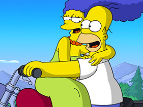

Guided Dives
Catalina Island is a world class dive destination. Divers travel from all over the world to Explore and photograph the Kelp Forests, filled with life. The Kelp is home to to ghrisande, kelp bass, opacity, sareo and many others. The rocky neome to octopus, eels, lobsters and more. Also our seasonal visitor like sandwes, anchovies, taulomackeral, bat ray, black sea bass, divine commondans make the diving phenomenal. Visibility is generally quite good nangle from 3 feet to over 100 feet or occasion. Our guided divers are conducted at casef is hino point underworld park. This area has been protected since 1964 and is filled with life. It is considered by many one of the best shown sharks in the world. It is a dive not to be missed. There are many reasons to do a guided dive... If you have not dived in awhile, if you are new to diving, and unfamiliar with the park, have never dived in the Kelp, want to concentrate on photography, and not dived without a buddy. All we need is trust and couple of hours of your time to introduce you to our magnificent Kelp Forests. Our knowledgeable and experienced guides will make sure your experience is memorable.
Cost:
1 person $100 - EA
2 or more $90 - EA
Night Dives $130 - EA
Time: About two hours
What to have: certification card, trunks or swimsuit, and a towel
Dive Location: Casino power dive park
Reservations: Suggested